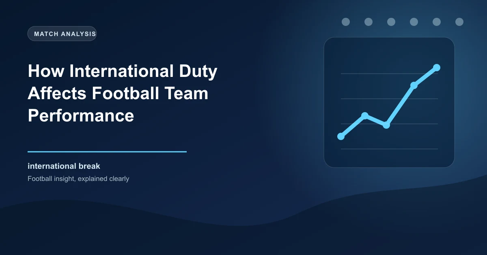

International breaks are one of the most frustrating interruptions in the domestic football calendar for both fans and bettors. The two-week pause disrupts team momentum, scatters squads across multiple continents, and introduces a host of physical and psychological variables that affect the first round of domestic fixtures after the break. For bettors who fail to account for the international hangover effect, post-international matchdays can be a minefield of unexpected results.
In this comprehensive guide, we will analyse how international duty affects club team performance, which positions suffer the most fatigue, and how you can develop betting strategies specifically tailored to post-international matchdays. Understanding these dynamics can help you identify value when the market has not fully priced in the impact of the international window.
The impact of international breaks on club performance operates through multiple channels. The most obvious is physical fatigue. Players who travel long distances for international matches, particularly those involving flights across time zones, arrive back at their clubs physically depleted. A player who flies from Europe to South America for a World Cup qualifier and then returns 48 hours before a Premier League match is operating at a significant physical disadvantage compared to a teammate who spent the break training at the club's facilities.
The second channel is tactical disruption. During an international break, club managers cannot work with their full squad. Key players are away representing their countries, leaving the coaching staff to train only with the players who were not called up. This means that the tactical preparations for the first match back are necessarily incomplete. The manager may have a specific game plan in mind, but without the full squad available for training, implementing that plan becomes more difficult.
The third channel is psychological. Players returning from international duty may be riding high after a good performance for their country, or they may be deflated after a disappointing result. Either emotional state can affect their performance for their club. A player who scored a hat-trick for his national team may carry that confidence into the club match, or he may be mentally fatigued from the emotional highs and lows of international football.
Looking at data from the past ten seasons across Europe's top five leagues, several clear patterns emerge in the first round of fixtures after an international break. The home advantage effect increases noticeably in post-international matches. Teams playing at home after an international break win at a rate of approximately 47%, compared to the standard home win rate of around 44%. This increase is largely attributed to the travel fatigue suffered by away teams whose players have been criss-crossing the globe.
The draw rate also rises in post-international matches, climbing from the standard 26% to approximately 29%. This reflects the tactical uncertainty that comes with incomplete preparation. When neither team has had a full training week with their complete squad, the tactical edge that would normally separate them narrows, leading to more evenly contested matches.
Perhaps most significantly, the total goals market shows a slight decrease in post-international matches. The over 2.5 goals rate drops from approximately 50% to around 46% in the first match after a break. This is likely due to the combination of reduced attacking sharpness from key players and the tactical conservatism that managers adopt when they are unsure about their team's fitness levels.
Not all positions suffer equally from international duty. The impact varies significantly depending on the role the player performs for both club and country, the distance travelled, and the intensity of the international matches played.
Goalkeepers are generally the least affected position. While they do travel and train with their national teams, goalkeepers typically experience less physical exertion during matches compared to outfield players. The exception is goalkeepers who are actively involved in distribution, as the tactical demands of playing out from the back at international level can be mentally draining.
Central Defenders experience moderate fatigue from international duty. Defending requires concentration and positioning rather than pure stamina, so while central defenders do feel the effects of travel and disrupted preparation, they can often maintain their performance level. However, central defenders who play in high-pressing systems at both club and country level may accumulate significant fatigue.
Fullbacks are among the most affected outfield positions. Modern fullbacks are required to cover the entire length of the pitch, sprinting forward to support attacks and tracking back to defend. This combination of high-intensity running and repeated sprinting makes fullbacks particularly susceptible to the fatigue effects of international duty. Post-international, fullbacks often show reduced sprint distances and lower work rates.
Central Midfielders face a unique challenge. International matches often demand a different tactical approach than club matches, and midfielders must adapt their positioning and passing patterns accordingly. This tactical adjustment, combined with the physical demands of covering ground in the centre of the pitch, means midfielders can struggle for rhythm in the first match back.
Forwards are the most variable position in terms of international impact. Strikers who play for dominant national teams may score freely and arrive back full of confidence. Strikers who struggle for goals at international level may return low on confidence and sharpness. The key factor is minutes played: forwards who played both international matches in full are likely to be more fatigued than those who were substituted early.
When evaluating a team's post-international match, consider:
Travel distance is one of the most significant factors in post-international fatigue. A player who stays within Europe for their international duty, such as a German player representing Germany in a European qualifier, faces minimal travel disruption. The time difference is negligible, the flight is short, and the player can return to their club within a day of the international match.
Contrast this with a Premier League player from South America who flies from London to Buenos Aires for a World Cup qualifier, plays the match, and then flies back. The total travel time can exceed 24 hours each way, the time difference disrupts sleep patterns, and the altitude and climate differences add further physical stress. This player may return to their club three or four days before the next match but still be physically compromised.
Research on travel fatigue in sport shows that the effects are most pronounced when the travel involves crossing more than three time zones. Players crossing four or more time zones show measurable decreases in sprint performance, reaction time, and decision-making accuracy for up to five days after returning. This has direct implications for betting: teams with significant numbers of South American or African internationals may underperform in the first match after a long-distance international window.
The term international hangover describes the collective underperformance of teams in the first match after an international break. While individual players may return in different states of fitness and confidence, the team as a whole typically operates below its normal level. This happens because the tactical cohesion that managers build through daily training is disrupted by two weeks of separation.
The international hangover is most severe for teams that rely heavily on tactical organisation and quick passing combinations. Teams like Manchester City, who build their play around precise positional movements and rehearsed patterns, tend to struggle more after international breaks than teams who rely on individual quality or direct play. This is because the passing patterns and movement triggers that City players execute instinctively through daily repetition need time to be re-established after the break.
Teams with a higher proportion of international players also suffer more from the hangover effect. A team with 14 or 15 players away on international duty has almost no full-squad training before the first match back. A team with only 6 or 7 internationals retains a core group that can work with the manager on tactical preparations throughout the break.
Understanding the international hangover creates specific betting opportunities on post-international matchdays. Here are five strategies that account for the unique dynamics of these fixtures:
It is important to note that international breaks do not always harm club performance. For teams struggling with form, the break can serve as a reset button. Managers use the time to work with the players who remain at the club, addressing tactical issues and rebuilding confidence. When the full squad returns, the team may actually be better prepared than they would have been with a standard one-week preparation cycle.
Similarly, teams with few internationals benefit disproportionately from the break. While their rivals are dealing with the disruption of international duty, these teams can focus entirely on preparing for their next opponent. This tactical advantage can be decisive, particularly in closely contested matches where marginal gains matter.
The break can also benefit individual players who were struggling with minor injuries or fatigue. Two weeks of reduced intensity allows recovery that would not have been possible during a congested fixture schedule. Players returning from the break refreshed and injury-free can elevate their performance above their pre-break level.
Get predictions and analysis that account for international breaks and fixture congestion.
Get Today's Predictions Win
Win